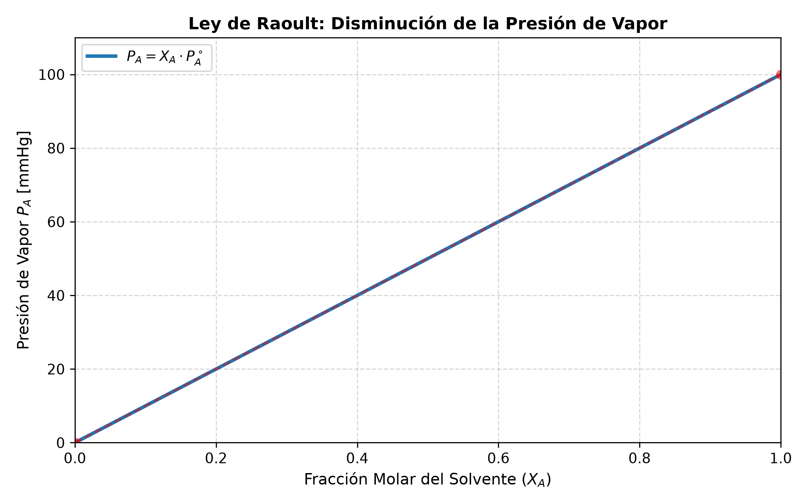

6.1 Soluciones y Propiedades Coligativas
1. Marco Teórico y Unidades de Concentración
Una disolución (o solución) es una mezcla homogénea a nivel molecular o iónico formada por dos o más sustancias puras que no reaccionan entre sí[cite: 1, 124].
A. Componentes de una Solución
- Soluto: Sustancia que se encuentra en menor proporción o que cambia de estado físico al formar la solución.
- Solvente (Disolvente): Sustancia que se encuentra en mayor proporción y determina el estado de agregación de la solución (generalmente agua en sistemas acuosos).
2. Unidades de Concentración
Las unidades de concentración permiten cuantificar la cantidad de soluto presente en una determinada cantidad de solvente o solución.
A. Unidades Físicas
-
Porcentaje en Masa (\(\% \text{ m/m}\)): $\(\% \text{ m/m} = \frac{m_{\text{soluto}}}{m_{\text{solución}}} \times 100\)$
-
Porcentaje Masa en Volumen (\(\% \text{ m/v}\)): $\(\% \text{ m/v} = \frac{m_{\text{soluto}} \text{ [g]}}{V_{\text{solución}} \text{ [mL]}} \times 100\)$
-
Partes por Millón (\(\text{ppm}\)): $\(\text{ppm} = \frac{m_{\text{soluto}} \text{ [mg]}}{V_{\text{solución}} \text{ [L]}} \quad \text{o} \quad \text{ppm} = \frac{m_{\text{soluto}} \text{ [mg]}}{m_{\text{solución}} \text{ [kg]}}\)$
B. Unidades Químicas
-
Molaridad (\(M\)): Moles de soluto por litro de solución. $\(M = \frac{n_{\text{soluto}}}{V_{\text{solución}} \text{ [L]}} \quad \left[\frac{\text{mol}}{\text{L}}\right]\)$
-
Molalidad (\(m\)): Moles de soluto por kilogramo de solvente puro. $\(m = \frac{n_{\text{soluto}}}{m_{\text{solvente}} \text{ [kg]}} \quad \left[\frac{\text{mol}}{\text{kg}}\right]\)$
-
Fracción Molar (\(X\)): Relación entre los moles de un componente y los moles totales del sistema. $\(X_{\text{soluto}} = \frac{n_{\text{soluto}}}{n_{\text{soluto}} + n_{\text{solvente}}}, \quad X_{\text{solvente}} = \frac{n_{\text{solvente}}}{n_{\text{soluto}} + n_{\text{solvente}}}\)$ $\(\sum X_i = X_{\text{soluto}} + X_{\text{solvente}} = 1\)$
3. Propiedades Coligativas de las Disoluciones
Las propiedades coligativas son aquellas propiedades físicas de las soluciones que dependen únicamente del número de partículas de soluto disueltas por unidad de volumen y no de la naturaleza química o identidad de las partículas.
A. Disminución de la Presión de Vapor (Ley de Raoult)
La adición de un soluto no volátil reduce la presión de vapor del solvente puro debido a que las partículas de soluto ocupan parte de la superficie del líquido, disminuyendo la tasa de evaporación del solvente.
Donde: * \(P_A\): Presión de vapor de la solución. * \(P_A^\circ\): Presión de vapor del solvente puro a una temperatura dada. * \(X_A\): Fracción molar del solvente (\(X_A = 1 - X_{\text{soluto}}\)).
El descenso de la presión de vapor (\(\Delta P\)) es: $\(\Delta P = P_A^\circ - P_A = X_{\text{soluto}} \cdot P_A^\circ\)$

B. Elevación Ebulloscópica (\(\Delta T_e\))
El punto de ebullición de una solución con soluto no volátil es mayor que el del solvente puro, ya que se requiere una mayor temperatura para que la presión de vapor iguale a la presión atmosférica externa.
Donde: * \(K_e\): Constante ebulloscópica molal característica del solvente \(\left[\frac{^\circ\text{C} \cdot \text{kg}}{\text{mol}}\right]\). * \(m\): Molalidad del soluto \(\left[\frac{\text{mol}}{\text{kg}}\right]\). * \(i\): Factor de van 't Hoff.
C. Descenso Crioscópico (\(\Delta T_c\))
El punto de congelación de una solución es siempre menor que el del solvente puro debido a que las partículas de soluto interfieren en la formación de la red cristalina del sólido.
Donde: * \(K_c\): Constante crioscópica molal característica del solvente \(\left[\frac{^\circ\text{C} \cdot \text{kg}}{\text{mol}}\right]\).
D. Presión Osmótica (\(\pi\))
La ósmosis es el paso selectivo de moléculas de solvente a través de una membrana semipermeable desde una solución diluida hacia una más concentrada. La presión osmótica (\(\pi\)) es la presión hidráulica necesaria para detener este flujo.
Donde: * \(M\): Molaridad de la solución \(\left[\frac{\text{mol}}{\text{L}}\right]\). * \(R = 0.08206 \frac{\text{atm} \cdot \text{L}}{\text{mol} \cdot \text{K}}\): Constante de los gases ideales. * \(T\): Temperatura absoluta en Kelvin (\(\text{K}\)).
4. Factor de van 't Hoff (\(i\)) para Electrolitos
Para soluciones de electrolitos (sustancias que se disocian en iones al disolverse), el número de partículas efectivas en solución aumenta.
- No electrolitos (ej. glucosa, sacarosa, urea): No se disocian \(\rightarrow i = 1\).
- Electrolitos fuertes (disociación completa):
- \(\text{NaCl}(s) \rightarrow \text{Na}^+(ac) + \text{Cl}^-(ac) \implies i = 2\)
- \(\text{CaCl}_2(s) \rightarrow \text{Ca}^{2+}(ac) + 2\text{Cl}^-(ac) \implies i = 3\)
- \(\text{Na}_2\text{SO}_4(s) \rightarrow 2\text{Na}^+(ac) + \text{SO}_4^{2-}(ac) \implies i = 3\)
5. Ejercicios Resueltos del TP de Soluciones y Propiedades Coligativas
Ejercicio 1: Interconversión de Unidades de Concentración
Enunciado: Se disuelven \(20.0 \text{ g}\) de sacarosa (\(\text{C}_{12}\text{H}_{22}\text{O}_{11}\), \(M_m = 342.3 \text{ g/mol}\)) en \(80.0 \text{ g}\) de agua hasta obtener una solución con densidad \(\rho = 1.08 \text{ g/mL}\).
Calcular:
a) El \(\% \text{ m/m}\).
b) La molalidad (\(m\)).
c) La molaridad (\(M\)).
Desarrollo Analítico:
-
Paso a): Porcentaje en Masa (\(\% \text{ m/m}\)) $\(m_{\text{solución}} = m_{\text{soluto}} + m_{\text{solvente}} = 20.0 \text{ g} + 80.0 \text{ g} = 100.0 \text{ g}\)$ $\(\% \text{ m/m} = \frac{20.0 \text{ g}}{100.0 \text{ g}} \times 100 = 20.0\% \text{ m/m}\)$
-
Paso b): Molalidad (\(m\))
- Moles de soluto (\(n_{\text{soluto}}\)): $\(n_{\text{soluto}} = \frac{20.0 \text{ g}}{342.3 \text{ g/mol}} \approx 0.0584 \text{ mol}\)$
-
Masa de solvente en kg: \(m_{\text{solvente}} = 80.0 \text{ g} = 0.0800 \text{ kg}\). $\(m = \frac{0.0584 \text{ mol}}{0.0800 \text{ kg}} = 0.730 \text{ mol/kg} = 0.730 \text{ m}\)$
-
Paso c): Molaridad (\(M\))
- Volumen de la solución (\(V_{\text{solución}}\)): $\(V_{\text{solución}} = \frac{m_{\text{solución}}}{\rho} = \frac{100.0 \text{ g}}{1.08 \text{ g/mL}} \approx 92.59 \text{ mL} = 0.09259 \text{ L}\)$
- Molaridad: $\(M = \frac{0.0584 \text{ mol}}{0.09259 \text{ L}} \approx 0.631 \text{ M}\)$
Ejercicio 2: Determinación de Masa Molar por Presión Osmótica
Enunciado: Una solución preparada disolviendo \(3.25 \text{ g}\) de una proteína desconocida en agua hasta completar \(100 \text{ mL}\) de solución presenta una presión osmótica de \(12.5 \text{ mmHg}\) a \(25^\circ\text{C}\).
Determine la masa molar de la proteína (asuma \(i = 1\)).
Desarrollo Analítico:
- Conversión de Unidades al Sistema Internacional:
- Presión \(\pi\): $\(\pi = \frac{12.5 \text{ mmHg}}{760 \text{ mmHg/atm}} \approx 0.01645 \text{ atm}\)$[cite: 127]
- Temperatura \(T\): $\(T = 25 + 273.15 = 298.15 \text{ K}\)$
-
Volumen \(V\): $\(V = 100 \text{ mL} = 0.100 \text{ L}\)$
-
Cálculo de la Molaridad (\(M\)): De la fórmula \(\pi = M R T\): $\(M = \frac{\pi}{R T} = \frac{0.01645 \text{ atm}}{(0.08206 \frac{\text{atm} \cdot \text{L}}{\text{mol} \cdot \text{K}})(298.15 \text{ K})} = \frac{0.01645}{24.466} \approx 6.724 \times 10^{-4} \text{ mol/L}\)$
-
Cálculo de Moles Totales (\(n\)) y Masa Molar (\(M_m\)): $\(n = M \cdot V = (6.724 \times 10^{-4} \text{ mol/L}) \cdot (0.100 \text{ L}) = 6.724 \times 10^{-5} \text{ mol}\)$ $\(M_m = \frac{m}{n} = \frac{3.25 \text{ g}}{6.724 \times 10^{-5} \text{ mol}} \approx 48334 \text{ g/mol} \approx 48.3 \text{ kDa}\)$
6. Ejercicio Típico de Parcial Explicado Paso a Paso
Enunciado: Se disuelven \(11.7 \text{ g}\) de cloruro de sodio (\(\text{NaCl}\), \(M_m = 58.44 \text{ g/mol}\)) en \(500 \text{ g}\) de agua pura (\(K_c = 1.86 \frac{^\circ\text{C} \cdot \text{kg}}{\text{mol}}\), \(K_e = 0.512 \frac{^\circ\text{C} \cdot \text{kg}}{\text{mol}}\)). Asumiendo una disociación iónica completa del electrolito:
a) Calcule el punto de congelación de la solución.
b) Calcule el punto de ebullición de la solución a \(1 \text{ atm}\).
Resolución Explicada para Examen:
-
Paso 1: Determinar el Factor de van 't Hoff (\(i\)) Dado que el \(\text{NaCl}\) es un electrolito fuerte que se disocia completamente: $\(\text{NaCl}(s) \rightarrow \text{Na}^+(ac) + \text{Cl}^-(ac) \implies i = 2\)$
-
Paso 2: Calcular la Molalidad (\(m\)) de la Solución
- Moles de \(\text{NaCl}\): $\(n_{\text{soluto}} = \frac{11.7 \text{ g}}{58.44 \text{ g/mol}} \approx 0.200 \text{ mol}\)$
- Masa de agua en kg: \(m_{\text{agua}} = 500 \text{ g} = 0.500 \text{ kg}\).
-
Molalidad: $\(m = \frac{0.200 \text{ mol}}{0.500 \text{ kg}} = 0.400 \text{ mol/kg} = 0.400 \text{ m}\)$
-
Paso 3: Cálculo del Descenso Crioscópico y Punto de Congelación (Paso a) $\(\Delta T_c = K_c \cdot m \cdot i = (1.86 \frac{^\circ\text{C} \cdot \text{kg}}{\text{mol}}) \cdot (0.400 \text{ m}) \cdot 2 = 1.488 ^\circ\text{C}\)$ Como el agua pura congela a \(0.00 ^\circ\text{C}\): $\(T_c = T_c^\circ - \Delta T_c = 0.00 ^\circ\text{C} - 1.488 ^\circ\text{C} = -1.49 ^\circ\text{C}\)$
-
Paso 4: Cálculo de la Elevación Ebulloscópica y Punto de Ebullición (Paso b) $\(\Delta T_e = K_e \cdot m \cdot i = (0.512 \frac{^\circ\text{C} \cdot \text{kg}}{\text{mol}}) \cdot (0.400 \text{ m}) \cdot 2 = 0.4096 ^\circ\text{C}\)$ Como el agua pura hierve a \(100.00 ^\circ\text{C}\) a \(1 \text{ atm}\): $\(T_e = T_e^\circ + \Delta T_e = 100.00 ^\circ\text{C} + 0.41 ^\circ\text{C} = 100.41 ^\circ\text{C}\)$
graph TD
A[Inicio: Estudio de Soluciones Acuosas] --> B[Expresión de Concentraciones]
B --> C[Físicas: % m/m, % m/v, ppm]
B --> D[Químicas: Molaridad M, Molalidad m, Fracción Molar X]
A --> E[Propiedades Coligativas]
E --> F[Ley de Raoult: ΔP = X_soluto * P°]
E --> G[Descenso Crioscópico: ΔTc = Kc * m * i]
E --> H[Elevación Ebulloscópica: ΔTe = Ke * m * i]
E --> I[Presión Osmótica: π = M * R * T * i]
G & H & I --> J{Naturaleza del Soluto}
J -->|No Electrolito| K[Factor van 't Hoff i = 1]
J -->|Electrolito Fuerte| L[Factor i = Número de iones producidos]